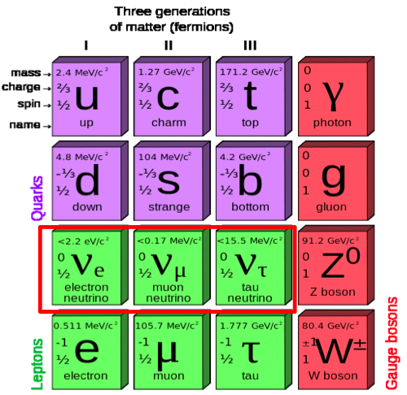

Neutrinos are fun!
Neutrinos (ν) are one of the most elusive and intriguing subatomic particles we know of. They are the most abundant massive particle in the universe so we should try to know everything about them! They have no electric charge, were originally thought to have zero mass, hardly interact with matter, and exist in three flavors as electron, muon, and tau (νe, νμ and ντ) neutrinos. νe's emerge from nuclear fusions occurring in the interior of stars such as the sun.

Fig. 1 Standard Model of Particle Physics
An amazing discovery was that there was a large deficit in the detected number of νe's coming from the sun when compared to the precise theoretical predictions from solar models. Experiments showed that they had turned into neutrinos of a different flavor during the journey! From quantum mechanics, this mutation or “oscillation” implies neutrinos must be massive, contrary to the expectations on the otherwise precise Standard Model (SM) of particle physics.
This process is parameterized in terms of the neutrino mixing matrix, composed of 3 mixing angles and 1 CP violating phase “δ”. Hence, studying neutrino properties is a window into the physics beyond the SM and is a critical program in particle physics.
Fig.2 Usual parametrization of the neutrino mixing matrix
The Tokai-to-Kamioka (T2K) Experiment
The T2K (Tokai-to-Kamioka) experiment in Japan was designed to discover the remaining unknown angle "θ13". Protons generated by the JPARC accelerator hit a graphite target and, through pion decays, produce a controlled beam of νμ's around 1 GeV. θ13 is accessed through the oscillation of νμ to νe.
Fig.3 The neutrino beam is produced 295km away from Super-Kamiokande
The energy spectrum of neutrinos, and thus the precision of the measurement, depends on the accurate determination of the position, profile and angle of the proton beam.
Optical Transition Radiation Detector
The optical transition radiation (OTR) monitor designed by York, TRIUMF and U Toronto, has proven to be critical, providing them by imaging a 2D profile of the proton beam away from the harsh high-radiation environment of the target area.
Fig.4 Diagram of the OTR system.
Please take a look at the published OTR NIM paper for detailed information.